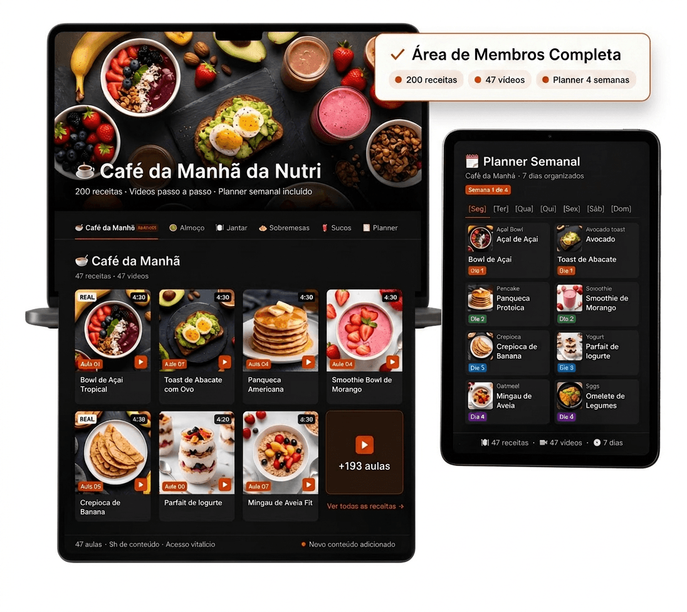
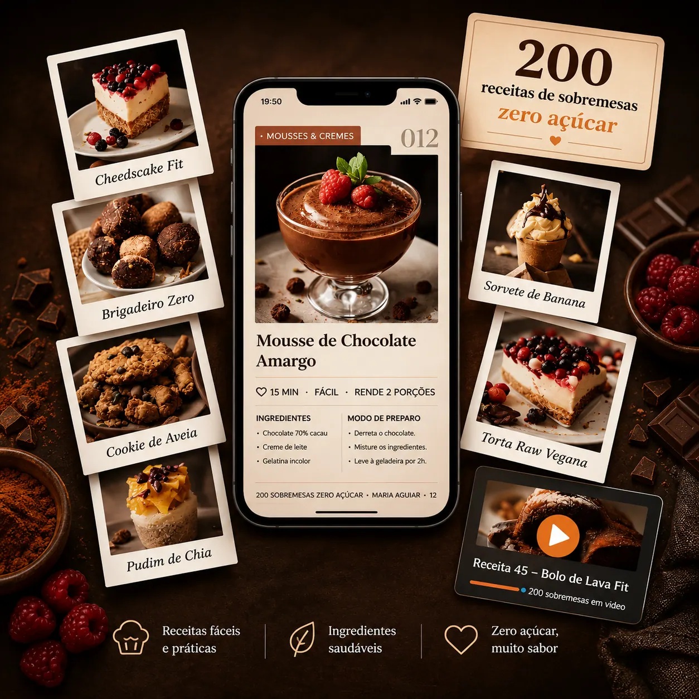
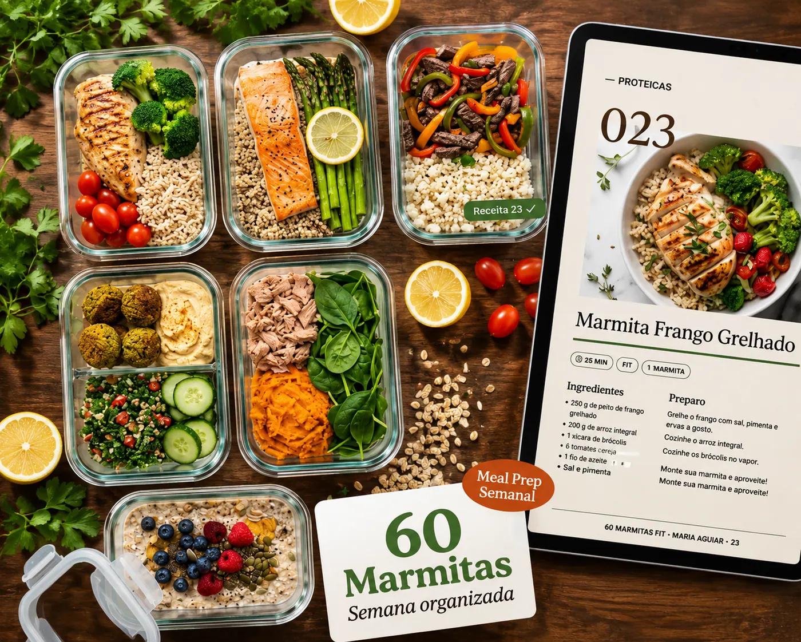
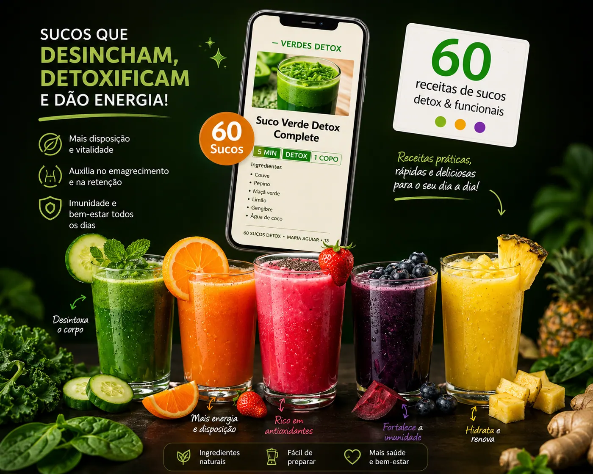
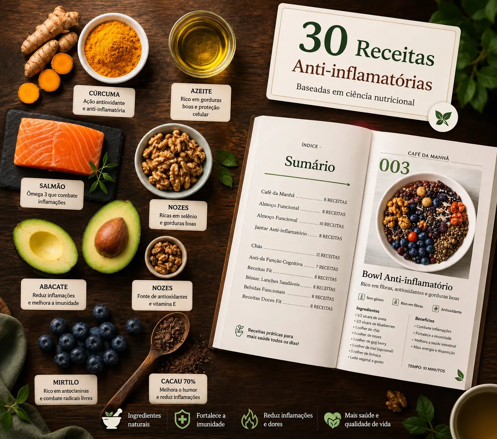

CAFÉ DA MANHÃ RÁPIDO,
BARATO E GOSTOSO — PRA
EMAGRECER SEM SOFRER.
Acorda, abre o celular, escolhe o que vai comer e em 10 minutos tem uma delícia saudável na sua mesa. Sem culpa. Sem dieta triste. Sem o mesmo pão com ovo de sempre.
Se você se identifica com pelo menos 3 desses, esse app de receitas foi feito pra você:
- ✕Você quer comer saudável, mas não tem ideia do que fazer além de pão com ovo.
- ✕Começa a dieta, enjoa na primeira semana e desiste porque “comida saudável é sem sabor”.
- ✕Acorda sem tempo, pula o café e ataca qualquer porcaria no meio da manhã.
- ✕Acha que receita fit precisa de mil ingredientes caros que nem o mercado perto tem.
- ✕Já comprou app de receitas que exigia airfryer, processador, liquidificador industrial.
- ✕Quer perder peso mas não aguenta mais comer a mesma coisa todos os dias.
+ A solução
A solução é ter um menu pronto.
Mais de 200 receitas de café da manhã criadas por nutricionista. Cada uma fica pronta em até 15 minutos, usa só ingredientes do mercado da esquina, e cabe em qualquer rotina — por mais corrida que seja.

Vídeo passo a passo
Cada receita tem um vídeo curto mostrando exatamente o que fazer. Sem confusão, sem interpretação. Você vê, você faz.
Receita escrita completa
Ingredientes com gramatura exata, modo de preparo numerado, calorias, proteínas. Tudo calculado. Imprime ou abre no celular enquanto cozinha.
Planner semanal incluído
Não precisa pensar qual receita fazer cada dia. O planner já organiza sua semana inteira. Você só abre e faz.
+ Veja por dentro
200+ receitas.
Cada uma com vídeo.
Cada uma testada.
Tudo calculado — gramatura, tempo de preparo, calorias e rendimento. Dá fome só de olhar.
+ 193 receitas esperando por você no app
Criado por quem entende
Camila Moura
Nutricionista · Especialista em Alimentação Funcional
“Criei esse app depois de ouvir a mesma coisa todo dia no consultório.”
Toda consulta, a mesma pergunta: “Nutri, o que eu faço no café da manhã que não seja pão com ovo?”
Eu vi mulheres com toda a força de vontade do mundo desistindo — não por preguiça, mas por falta de opção.
Aí eu sentei, testei mais de 200 receitas uma por uma, filmei cada passo, calculei cada caloria — e coloquei tudo num app que você abre no celular às 7 da manhã e em 10 minutos tem algo delicioso na mesa.
Isso aqui é o que eu daria pras minhas pacientes se eu pudesse atender 37.000 mulheres ao mesmo tempo.
+ Só por tempo limitado
Mais 5 bônus de presente
Valor total R$111.
Hoje, junto com o app principal, você leva pra casa tudo isso:

200 Sobremesas Zero Açúcar
Sobremesa todo dia sem sair da dieta — nem pesar na consciência ou na balança.

60 Marmitas Fit
Almoço e janta resolvidos. Você prepara no domingo e come bem até sexta.

60 Sucos Detox
Um suco diferente por dia, por 2 meses. Ingredientes simples, resultado real.

30 Receitas Anti-inflamatórias
Pra desinchar, diminuir celulite e acabar com aquela sensação de peso.
20 Pães Sem Glúten
Ama pão mas não aguenta estufar a barriga? 20 receitas leves e caseiras.
Lista de Compras Inteligente
Cardápio de 7 dias com lista de mercado pronta. Chega em casa e já começa a cozinhar — sem pensar.
+ Resultado de quem já usa
37.000 mulheres
já mudaram o café
da manhã.
Essas são algumas delas. Sem filtro, sem edição.
“Nunca pensei que ia gostar de comer saudável de manhã. Já fiz mais de 40 receitas e não enjoei de nenhuma. Em 5 semanas perdi 3,5kg só mudando o café da manhã.”
“Já tinha comprado dois apps de receita antes. Esse é completamente diferente. O vídeo muda tudo — parece que a Camila tá na cozinha com você. Perdi 4kg em 6 semanas.”
“Achei que era mais do mesmo. Me arrependi de não ter comprado antes. Faço as receitas com minha filha de 8 anos — ela adora. E eu emagreci 5kg em 2 meses.”
★★★★★ 4.9 de 5 — baseado em +2.400 avaliações
Tudo isso por menos de um
lanche no shopping.
- 📱 App +200 Cafés da Manhã (com vídeos)R$129,00
- 🎁 Bônus 01 — 200 Sobremesas Zero AçúcarR$29,00
- 🎁 Bônus 02 — 60 Marmitas FitR$15,00
- 🎁 Bônus 03 — 60 Sucos DetoxR$29,00
- 🎁 Bônus 04 — 30 Anti-inflamatóriasR$19,00
- 🎁 Bônus 05 — 20 Pães Sem GlútenR$19,00
- Valor totalR$240,00
Menos de R$1,57 por dia. Por 6 meses de cafés da manhã gostosos, saudáveis e completamente diferentes.
Pagou uma vez, é seu pra sempre. O app fica no seu celular — sem mensalidade, sem renovação, sem pegadinha.
Todo mês entram receitas novas no app — sem pagar nada a mais. Seu cardápio nunca fica velho.
Garantia
Testa. Usa. Decide.
Se não amar, devolvo
cada centavo.
Você tem 7 dias pra abrir cada receita, assistir cada vídeo, testar cada bônus — sem pressa.
Se achar que não vale o preço, manda um e-mail. Devolvo tudo na hora. Sem perguntas, sem formulário, sem burocracia.
E o melhor: você fica com o acesso a tudo mesmo assim.
+ Como você recebe
Na hora da compra, tudo fica na sua mão.
Link de acesso permanente chega na hora.
Mandamos pelo zap também pra você não perder.
Abre enquanto cozinha, direto na tela.
Pode imprimir e montar seu caderno de receitas.
Tablet, notebook, TV — funciona em tudo.
Manda mensagem. Reenviamos em minutos.
+ Dúvidas frequentes
Perguntas honestas, respostas diretas.
Porque você nunca teve 200 receitas gostosas, com vídeo, prontas em 15 minutos. Ninguém desiste de comida que sabe bem e é fácil de fazer.
Foram testadas uma por uma pra provar que fit pode ser gostoso. Se você não gostar, a garantia de 7 dias existe exatamente pra isso.
Não. A maioria precisa só de frigideira ou liquidificador comum. Nada de equipamento caro que você não tem em casa.
Tudo é encontrado em qualquer mercado de bairro. Nada importado, nada exótico. Ingredientes que provavelmente já estão na sua geladeira.
Sim. A maioria das receitas é agradável pra toda a família. Várias mães usam com os filhos e relatam que eles adoraram.
Foi feito especialmente pra quem não sabe cozinhar. O vídeo mostra cada passo em tempo real. Se você sabe ligar o fogão, você consegue.
Imediatamente por e-mail e WhatsApp. Acesso vitalício — não expira.
Sim. 7 dias de garantia total. Manda um e-mail e devolvemos tudo. Sem perguntas. Sem burocracia. Você ainda fica com o acesso.
Você pode continuar comendo pão com ovo. Ou pode ter 200 receitas na palma da mão hoje.
Por menos do que você gasta num lanche no shopping, você resolve seu café da manhã pelos próximos 6 meses. Sem sofrer. Sem enjoar. Sem complicação.